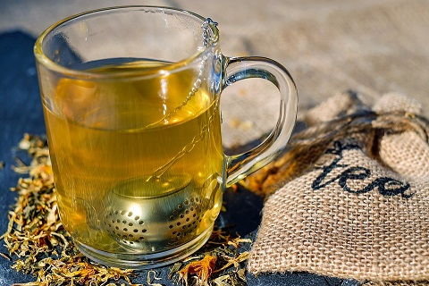
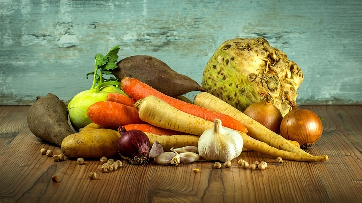
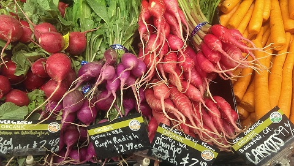

Despite the name, herbal tea is not actually "tea" as these beverages typically do not contain the leaves or leaf buds of tea plants.
Herbal teas are made from tisanes, which are blends or infusions of dried fruits, flowers, spices or herbs in water.
Tisanes have been shown to offer medicinal effects. Be an informed consumer—many beverages marketed as "herbal tea" with "herbal tea benefits" are nothing more than sugary juice.
Is herbal tea good for you? Some herbal teas offer
health-promoting properties and have been used as natural remedies for centuries. more text....